GymOS
Smarter gyms.
Stronger communities.
A simple, step-by-step manual for the front desk — checking members in, signing up new ones, and taking payments.
For receptionists & desk staff
Your gym. Simplified.
gymos.africa
GymOS is where you look someone up, see whether they are paid up, and let them in. It also remembers who came and who paid.
When you open a member's page, you will see two boxes side by side. These are the two things a member pays for, and they are counted separately.
| The box | What it means |
|---|---|
| Membership | Their right to belong to the gym. Everybody must have one. It lasts a year. |
| Equipment | Their right to use the machines. This is extra, and paid for separately. It might last a day, a week, a month or a year — whatever your owner set up. |
Someone can be paid up on one and not the other. GymOS shows you both and tells you plainly whether to let them in.
Once you press a button that takes a payment or records a visit, it cannot be undone — not by you, not by your owner. So take one second to check you have the right person and the right plan before you confirm. This protects you too: nobody can quietly change what you recorded.
| Where | What it's like |
|---|---|
| The desk computer | GymOS is installed on it. It keeps working even when the internet is down. This is the normal way to work. |
| A web browser | You go to gymos.africa and sign in. Needs internet all the time. |
| A phone | The same thing, arranged to fit a small screen. |
Everything in this guide works the same way in all three. Where something only applies to the desk computer, it says so.
You don't make your own account. Your owner makes it for you and gives you two things.
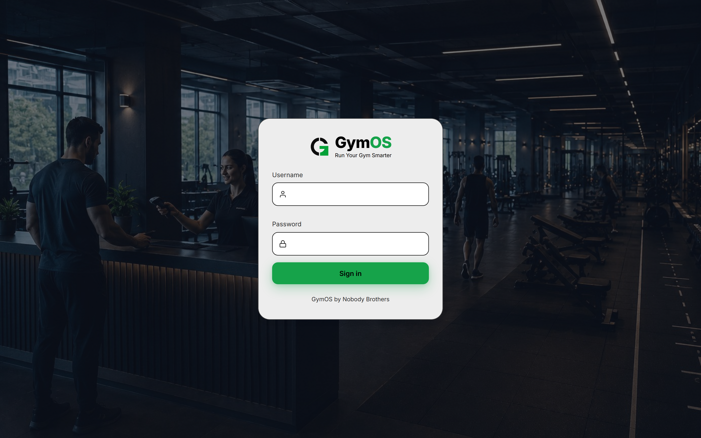
| Item | What it looks like |
|---|---|
| A username | Your gym's short code, a dash, then your name — like sbg-reception. It's all small letters. It is not an email address. |
| A starter password | A password the system made up. Your owner can only see it once, so write it down when they give it to you. |
You'll type this many times a day with someone standing in front of you. Pick something you can type fast without looking — but not your name, not the gym's name, and not 123456. Three ordinary words stuck together works well.
Don't worry — your owner can reset it for you. They'll put your account back on the starter password Welcome123 and tell you. Sign in with that, and GymOS will ask you to pick a new password of your own straight away. Nobody, including your owner, ever sees the password you choose.
After the first time, it's just your username and password, and you go straight to Check-in.
GymOS shows a short message in red. Here is what each one means.
| The message | What to do |
|---|---|
| Incorrect username or password. | Type both again slowly. Check the Caps Lock light. Check you included your gym's code and the dash. |
| Too many attempts. Wait a moment and try again. | Too many wrong tries in a row. Wait a few minutes and it will let you try again. |
| Can't reach the server. Check your internet connection and try again. | The internet is down. On the desk computer you can still get in (see Chapter 13). In a browser you have to wait. |
| Incorrect username or password, and you're sure it's right | Your owner may have reset your password. Ask them — if they have, sign in with Welcome123 and pick a new one. |
| This account has been suspended. Ask the gym owner to switch it back on. | Your owner has paused your account. Only they can turn it back on. Nothing you recorded has been lost. |
| This account hasn't signed in on this device before… | Desk computer only. You have never signed in on this computer while the internet was working, so it can't check you. Wait for the internet. |
| This device hasn't been online in over 14 days… | Desk computer only. Get the computer back online and sign in once — that starts the clock again. |
The sign-out button is the small arrow next to your name at the bottom of the menu. Use it whenever you leave the desk and someone else takes over.
If nobody touches the mouse, keyboard or screen for 30 minutes, GymOS signs you out by itself. This also happens if the computer was asleep. It's not a fault — just sign in again.
There are four places to go and one big green button. That's the whole thing.
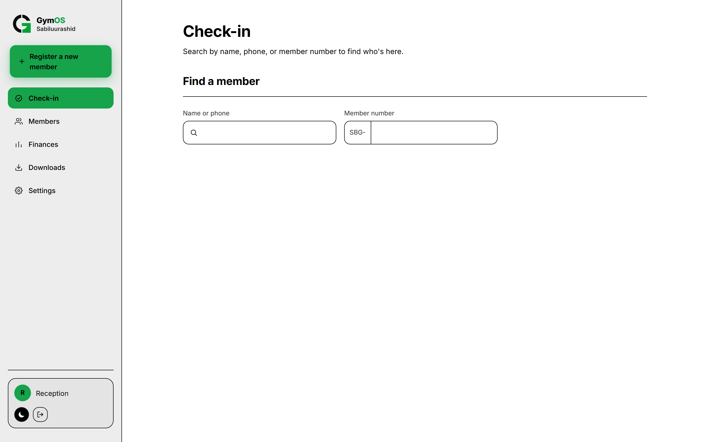
| Menu item | What it's for |
|---|---|
| Check-in | Where you start. Find one person fast. You'll be here most of the day. |
| Members | The full list of everyone, in name order, for browsing. |
| Finances | The money you took, today or ever. |
| Settings | Your details, the colours, your password — and your copy of this guide. |
Register a new member is a button, not a menu item, because it's something you do rather than somewhere you look. On a phone it turns into a round green + in the bottom corner.
On a phone that + only appears where it makes sense — on Check-in and on Members. You won't see it on Finances, Settings or somebody's profile, because there's nothing to add there.
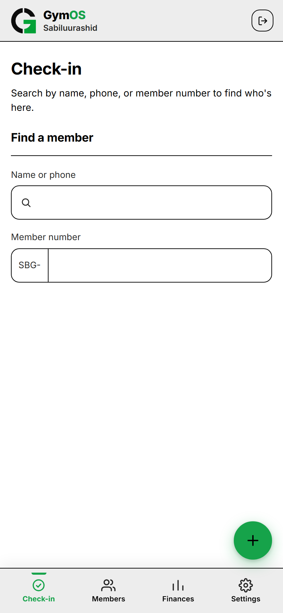
Somebody walks in. You find them, look at the colour, and either wave them through or take their money. It should take a few seconds.
There are two boxes. You can use either one — the results show up underneath in the same list.
| Box | How to use it |
|---|---|
| Name or phone | Type any part of their name or any part of their phone number. Part of it is enough — typing ada finds Ada Peters. Your typing cursor starts here, so you can just begin. |
| Member number | Your gym's code is already printed in front of the box and can't be changed. Just type the numbers. If their card says SBG-0073, type 0073. |
The list appears as you type. There is no search button to press.
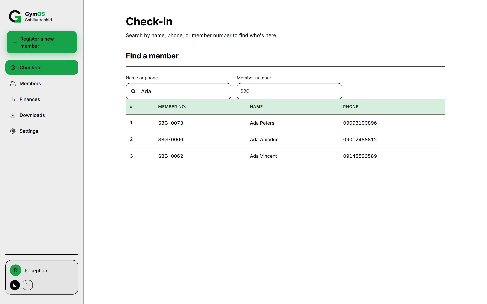
If they hand you a card, use the member number box — it always finds exactly one person. Use the name box when they've forgotten their card, and the phone number when two members have the same name.
Everything about one person on one screen. This is where you'll spend the rest of your day.
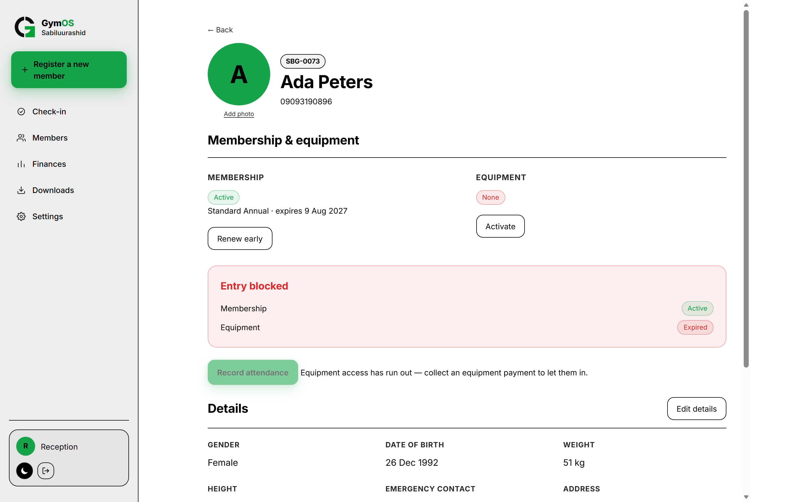
A photo is never required. Some gyms take one, some don't, and you can always add one later. If a photo won't upload, nothing else is affected.
Two boxes side by side. Each shows a coloured label and, underneath, which plan it is and when it runs out.
| Label | What it means | The button says |
|---|---|---|
| Active | Paid up and still running. The date underneath is when it ends. | Renew early |
| Expired | They had it before, and it has run out. | Renew |
| None | They have never had this. Common for equipment. | Activate |
| Pending | Equipment only. They have paid, but it hasn't started yet — it starts the next time you check them in. | No button. Nothing to do. |
Underneath, a wide box says either Entry allowed in green or Entry blocked in red, and lists both items so you can see which one is the problem.
It only says Entry allowed when both Membership and Equipment are green. If either is red, the whole box is red.
The box is advice for you, not a lock on the door. Whether somebody with a good membership but no equipment access may come in and use the floor is your gym's rule, not the software's. Ask your owner what they want, and do that.
| What the button says | What it means |
|---|---|
| Record attendance (green) | Ready. Press it once. |
| Already checked in today (grey) | You already did this today. It comes back tomorrow. |
| Grey, with "Collect a membership payment to enable check-in." | Their membership has run out. Renew it first. |
Checking someone in only needs their membership to be good. Equipment can be red and you can still check them in — and in fact you must, because checking them in is exactly what starts newly-bought equipment access running.
Further down: gender, date of birth, weight, height, emergency contact, address and email — plus any extra questions your owner added.
Press Edit details to fix any of them, then Save details. This only changes who they are. It never touches their payments or their visits.
At the very bottom are two tabs:
Use Payments when someone asks "when did I last pay?" and Attendance for "when was I last here?".
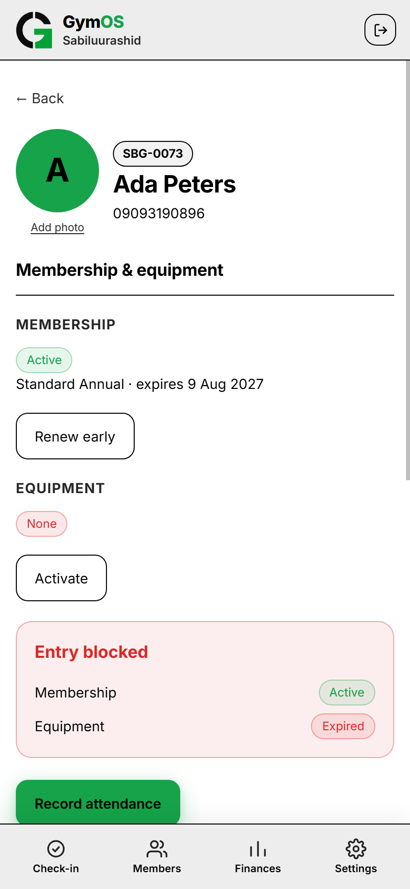
The longest form in GymOS, and the one worth slowing down for — at the end, the person gets a member number that stays with them forever.
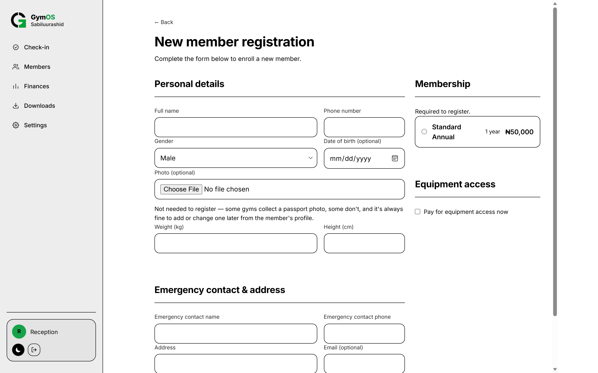
| Box | Must fill? | Notes |
|---|---|---|
| Full name | Yes | This is what you'll search for later, so spell it the way they'd say it. |
| Phone number | Yes | GymOS checks for anyone who already has this number while you type. |
| Gender | Yes | It starts on Male, so change it on purpose. |
| Date of birth | No | A little calendar. |
| Photo | No | You'll see a preview and a Remove button. Can be added later. |
| Weight (kg) | Yes | Numbers only. |
| Height (cm) | Yes | Numbers only. |
While you type a phone number, GymOS quietly looks for anyone who already has it. If it finds someone, a red box appears listing them by name and number.
| Box | Must fill? | Notes |
|---|---|---|
| Emergency contact name | Yes | Somebody other than the member. |
| Emergency contact phone | Yes | Read it back to them to be sure. |
| Address | Yes | Anything you like. |
| No | If you fill it in, it has to look like an email. |
If your owner added their own questions, they appear in their own box. Some are typed answers, some are numbers, some are a Yes/No choice. Ones marked (optional) can be skipped; the rest have to be filled in.
On the right is the Membership box, marked Required to register. Pick one plan from the list. Nobody can be signed up without one.
If it says "No membership tiers yet — ask your owner to create one.", you genuinely cannot sign anybody up. Tell your owner.
Underneath is a tick box: Pay for equipment access now. Tick it and a list of plans appears. Leave it alone if they only want membership — equipment can be added any day later.
SBG-0110. Numbers are never repeated, even if two desks sign somebody up at the same second.GymOS stops and tells you exactly what — "Enter the member's weight.", "Select a membership plan — required to register." Fix that one thing and press again. Cancel throws the whole form away without saving.
"Couldn't register this member." means nothing was saved — no member and no payment. Try again. Afterwards, search for their name to make sure they only appear once.
Every payment after sign-up happens on the member's own page, in the Membership and Equipment boxes.
| Plan | Runs until |
|---|---|
| Daily | The end of the day they bought it. Bought at 6 in the morning or 8 at night, it covers that day and ends at midnight. |
| Weekly | Seven days later. |
| Monthly | The same date next month. |
| Yearly | The same date next year. All memberships are yearly. |
The clock runs on days, not on visits. Somebody who buys a month and only comes twice still runs out after a month.
When something is still running, the button says Renew early. Use it when a member wants to pay ahead — but tell them first that the new period starts today. Paying two weeks early does not add those two weeks on.
Equipment does not start when it's paid for. It starts the next time you check them in. In between, the label says Pending.
This exists so that somebody who pays for a day pass on Monday evening to use on Tuesday actually gets Tuesday. What it means for you:
| They say… | You do |
|---|---|
| "I want to join." | Sign them up. The membership payment is part of signing up. |
| "My membership finished." | Open their page, press Renew on Membership, pick a plan, take the money, then check them in. |
| "I want to use the machines today." | Press Activate or Renew on Equipment, pick the daily plan, take the money, then check them in to start it. |
| "I paid yesterday but it says pending." | That's right and normal. Check them in now — that starts it. |
| "Can I pay for next month now?" | Yes — Renew early. Tell them it starts today. |
| "I paid the wrong amount." | You can't undo a payment. Tell your owner. The record stays as it is and they sort it out. |
"Couldn't record the payment." means nothing was charged. Try again, then look at the Payments list at the bottom of their page to check it's there exactly once.
The full list, in name order, for when you want to look rather than search.
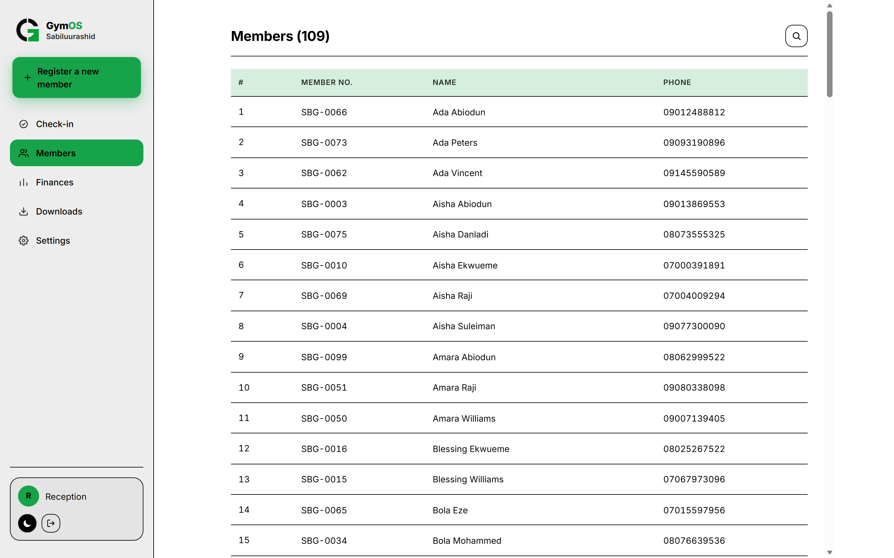
| Use | When |
|---|---|
| Check-in | Somebody is standing in front of you and you need them now. |
| Members | You're answering a question, looking someone up on the phone, or you're not sure who you're after. |
Your own record of your shift — the payments you personally took.
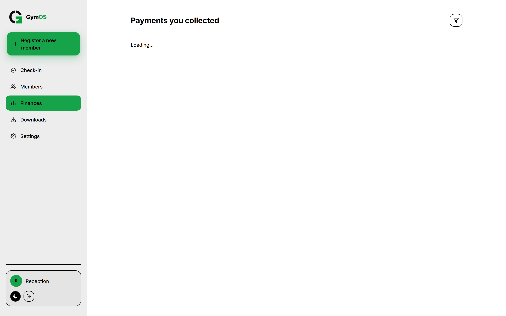
The heading says Payments you collected, and that's exactly what it is — the money taken while you were signed in. Another receptionist's payments don't show here, and yours don't show in theirs. Your owner sees everybody's together.
Each row shows the plan, whether it was membership or equipment, the amount and the time. Newest first.
Set the filter to Today and check the total against the cash in the drawer. If there's a difference, it is far easier to explain now than tomorrow.
If it says "No payments in this range." on Today, you simply haven't taken any money yet today.
You can download this booklet yourself, any time, from inside GymOS.
| Where you are | Where to look |
|---|---|
| On a phone | Open Settings and scroll to the Downloads box. |
| On a computer | Downloads in the menu, or the same box inside Settings. |
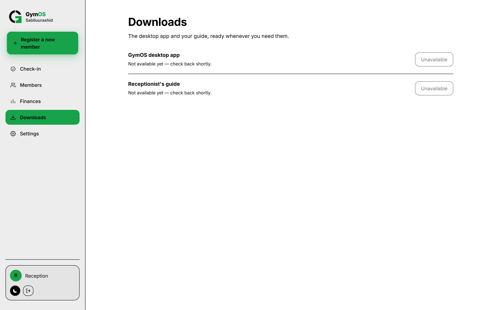
That's your owner's job, not yours — the installer isn't offered on a desk account. If the desk computer needs GymOS installed or reinstalled, ask your owner.
Three small boxes. Everything here is about you, not about the gym.
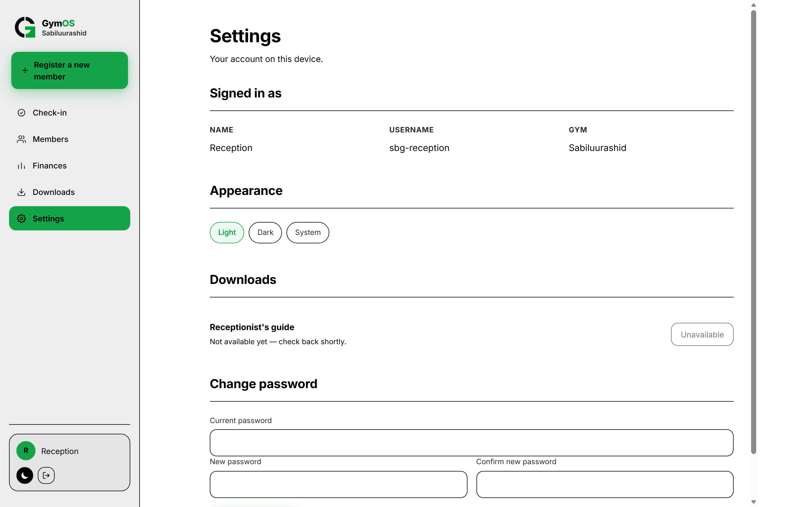
Your name, your username and your gym. You can't change these here. Worth a glance before you record anything, just to be sure it's your account.
To change your name or phone number, ask your owner.
Three choices: Light, Dark and System. Light and Dark stay as you set them. System follows whatever the computer or phone is doing. This only affects the device you're on.
Your copy of this guide lives here too, so you don't need a separate place to look for it. See Chapter 11.
| Message | What it means |
|---|---|
| Current password is incorrect. | The top box is wrong, not the new ones. |
| New password must be at least 6 characters. | Make it longer. |
| New passwords don't match. | The two new boxes are different. Type both again. |
Somebody watched you type it, you wrote it down and lost the paper, or you use it for something else too.
Ask your owner to reset it. They'll give you the starter password Welcome123, and GymOS will ask you to choose a new one the moment you sign in.
This chapter is only about the desk computer. If you use GymOS in a web browser, you can skip it.
The desk computer keeps its own copy of everything. When the internet goes down, nothing stops — you can still search, sign people up, take money and check people in. Everything is saved on the computer straight away.
Every record is saved on the computer first. Sending it to the internet is a separate step. A power cut or a dead connection never loses your work.
At the bottom of the menu, next to your name, there is a button with two circling arrows. Hover over it and it tells you where things stand.
| It says | What it means |
|---|---|
| Synced — tap to sync now | Everything has been sent. Nothing to do. |
| 3 pending changes — tap to sync now | Three things are saved here but haven't been sent yet. Send them when you have internet. |
| Syncing… | It's working. The button spins. |
| Sync failed — will retry automatically | The last try didn't get everything through. Your work is still safe on the computer. |
| Message | What to do |
|---|---|
| Synced successfully | Nothing. It's all sent. |
| Some records didn't sync — still saved here, will retry | Your work is safe on the computer but your owner can't see it yet. Try again later, and tell your owner if it keeps happening. |
| That password isn't right. | Type it again. |
| Can't reach the server… | Still no internet. Send later. |
Once when you arrive, once when the internet comes back, and once before you hand over at the end of your shift. That's enough.
Until it's been sent, your owner cannot see it. If your owner says a payment is missing, check the number on that button before assuming it wasn't taken.
The few screens and messages that can stop you, and what each one really means.
Your owner has paused your account. You can't sign in until they switch it back on. Nothing you recorded has been lost. Speak to your owner.
Almost always the 30-minute rule from Chapter 3. Sign in again — nothing was lost.
| Message | What it means |
|---|---|
| Couldn't load members. | The list didn't arrive. Check the internet or the send button. |
| Couldn't load this member. | That page didn't open properly. Go back and open it again. |
| Couldn't record attendance. | Not recorded. Try again. |
| Couldn't record the payment. | Nothing was charged. Try again, then check their Payments tab. |
| Couldn't register this member. | Nothing was saved. Search their name to be sure, then sign them up again. |
| Couldn't save these changes. | An edit didn't stick. Try again. |
| Couldn't upload this photo. | Only the photo failed. Everything else is fine. |
| No membership tiers yet… | Your owner hasn't set up any plans. You can't sign anybody up until they do. |
One page to keep beside the keyboard.
| Rule | Why |
|---|---|
| Both boxes must be green for Entry allowed | Membership and equipment are counted separately. |
| Checking in only needs membership | Equipment can be red and you can still check them in. |
| Equipment starts at the next check-in | That's what Pending means. Don't charge twice. |
| One check-in per member per day | The button goes grey until tomorrow. |
| Payments and check-ins can't be undone | Check the person and the plan before you confirm. |
| No internet is fine — unsent work is invisible to your owner | Send before you hand over. |